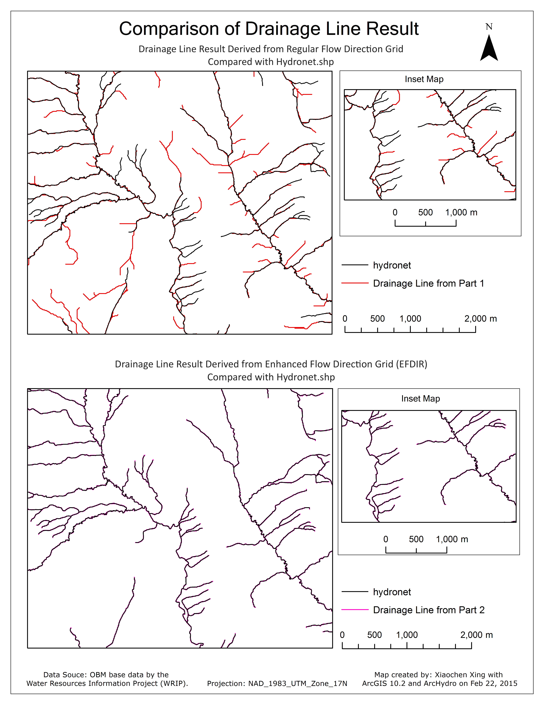

Portfolio
UML Data Model

This data model is designed for a real estate firm to better manage listings. It incorporates Object-Oriented Data Modeling concepts, including class, attribute, operation, association, association class, multiplicity, aggregation, composition, generalization, specialization, constraint, and inheritance.
Satellite Imagery Classification
This poster reflects the image classification result of a study area in the Rocky Mountains.
The study area was chosen because I thought a mountain region would be very interesting and challenging
to perform image classification due to the presence of shadows. This Landsat 8 image was captured in
August 2014 and required atmospheric correction. The original Landsat 8 band 1 was not used for this
particular project. The band 1 referred to in this project is the original Landsat 8 band 2. The initial
plan was to classify this image based on 5 classes, which are water, planted field, bare soil, forest and urban.
Two reference layers with band combinations 3-2-1 (true colour) and 4-3-2 (false colour infrared) would have been
sufficient for collecting adequate training sites.
However, during the process of collecting training sites, I discovered unusual land uses,
which were found to be ice and snow after investigation. This was unexpected because the satellite
image was taken in summer. Additional research was conducted to learn the appropriate band combination for
identifying snow and ice, which was 5-4-3. More challenges appeared after the first run of supervised classification.
A fairly large, flat and continuous area was identified as snow.
It seemed extremely odd and did not correspond the mountainous nature of the landscape.
After some more in-depth research, I discovered that the area is a coal-mining field.
It was a pleasant surprise. Some mountain shadows were classified as urban.
Yet, the result was still quite accurate due to the fact that I collected a good number
of training sites in shadowy regions. The accuracy assessment returned an overall accuracy of 76%.
NTS Standard Map
This map is showing the tourist attractions in the area covered by the National Topographic Database (NTS) 31D7. It implements NTS standard symbols to produce a cartographic correct map output. The map consists 18 layers in total showing shops, museums, restaurants, hotels, boat launch, picnic areas, railway, highways, major roads, roadways, rivers, parks, campground, urban area, golf course, lakes, wetlands, and vegetation.
Geocoding and Network Analysis
This networking map application reflected above will allow you to survive the zombie pandemic in Lindsay, Ontario. The table contains locations that will provide shelter, food and medical assistance. The application contains a networking tool that will map out the route from one location to another without encountering zombies. It reroutes when a new barrier appears due to zombie attack.
Cartographic Design
This map implements a variety of cartographic disciplines. The purpose and audience of the map are conveyed through title, pictures, and supplemental text. The design establishes balance, contrast and unity between elements. A typographical hierarchy is also applied to communicate information.
The map is dedicated to everyone who loves pink and food! The Yorkville district contains diverse businesses including designer boutiques, five star hotels, art galleries and many fine dining restaurants. However, Yorkville can be difficult to navigate for first time visitors, especially when some small stores hide in corners and basements. The map mainly focuses on showing the spatial context of some top-rated restaurants and their spatial relationship with hotels, subway stations and parking lots. The table shows specific address and other information of each restaurant. The audience for this map can be people who are new to Yorkville, such as travellers and recent migrants. In addition, since there exist more than a hundred dining places in Yorkville, people who are from Toronto may also need this map. Personally, I do have a difficult time remembering where are the restaurants located in Yorkville despite the fact that I lived there for a year and went to the university next to it for four years.
Terrain and Watershed Analysis

This map is created with Arc Hydro. It demonstrates the drainage point, drainage line and catchment areas derived from a regular flow direction grid.
This map compares the drainage line results derived from a regular flow direction grid and an enhanced flow direction (EFDIR) grid to a photogrammetrically interpreted representation of hydrology (hydronet layer). The result derived from an EFDIR grid corresponds much better to the hydrology. This occurred because the enhanced flow direction grid is a drainage enforced DEM. It fully honours the tortuous paths of the hydrology network, while the regular flow direction grid has only the general flow represented correctly. In addition, a EFDIR grid is designed to be used in conjunction with the known,
mapped hydrology - the water flow network available from the Water Resources Information Project (WRIP).
The hydrology is embedded in the EFDIR Grid.
For future terrain and watershed modelling, I will consider using the enhanced flow direction grid where possible. The establishment of the pour point directly on a stream segment (which corresponds to underlying cells in the EFDIR grid) is critical to achieve an accurate watershed boundary. The enhanced flow direction grid is a more appropriate approach to use as it affects both the watershed delineation and any subsequent modeling. Accurate input data will greatly assist the accuracy of the output model.